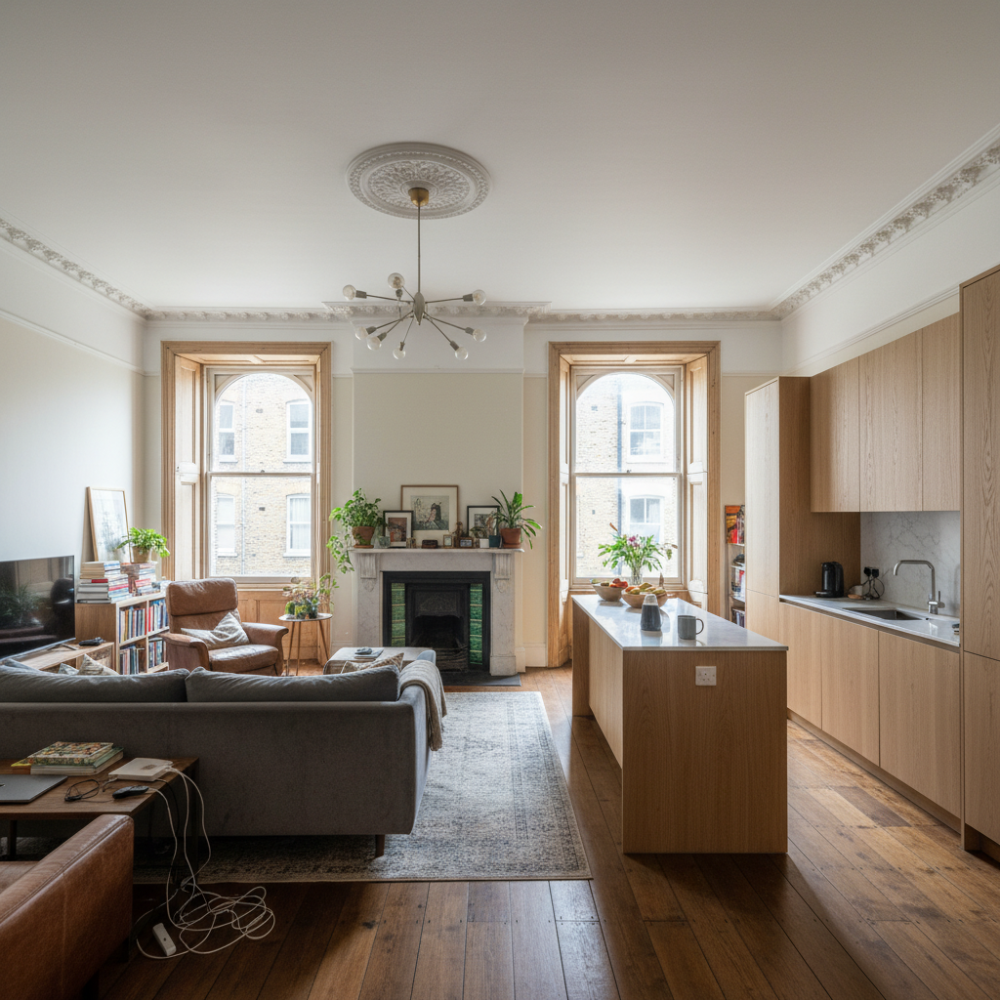
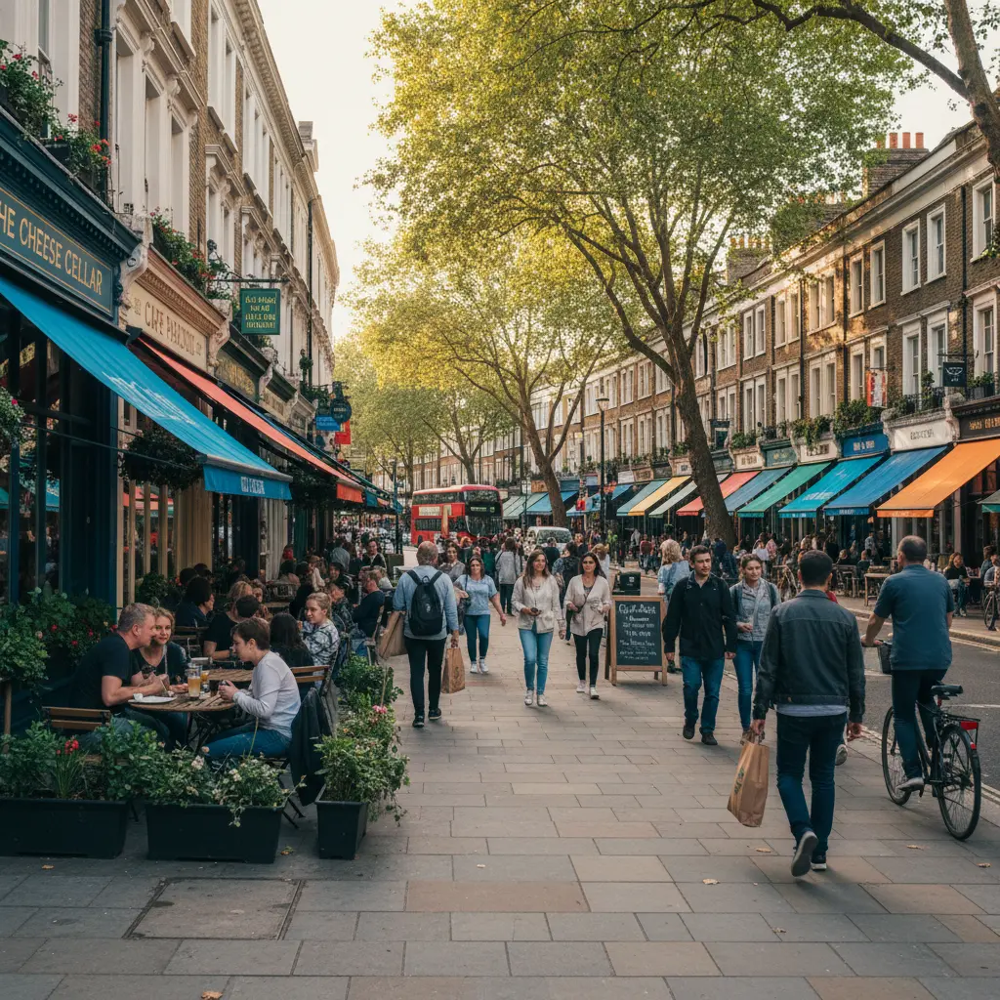
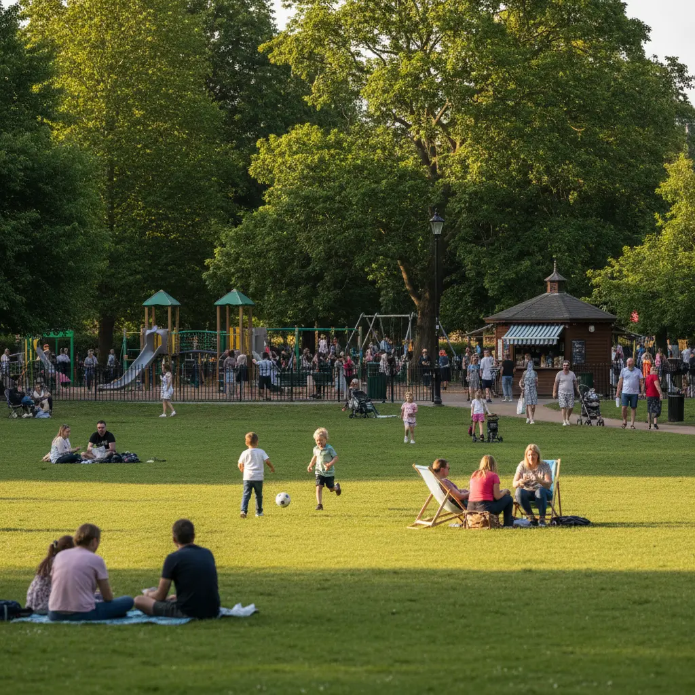

איזלינגטון לונדון - השכונה שמגניבה מבפנים
איזלינגטון לונדון - למה דווקא פה
רוב הישראלים שמחפשים דירה שנייה בלונדון מתחילים מאותם מקומות - סאות׳ קנזינגטון, נוטינג היל, צ׳לסי, מרילבון. שכונות שהם שמעו עליהן, שחברים קנו בהן, שנראות להם כמו "לונדון". ואיזלינגטון לונדון? רוב הישראלים אפילו לא שמעו את השם.
וזו בדיוק הנקודה.
איזלינגטון היא שכונה בצפון-מרכז לונדון שעובדת אחרת מכל מה שאתם מכירים מהרשימה הרגילה. היא לא מנסה להרשים. אין פה את הפאר של צ׳לסי או את הצבעוניות של נוטינג היל. מה שיש פה זה טרסים ג׳ורג׳יאניים מושלמים, גני כיכר שקטים, תיאטרון ברמה עולמית, ומסעדות שלונדונים נוסעים אליהן מכל העיר.
ומה שהכי חשוב לרוכשים ישראלים - המחירים נמוכים משמעותית ממערב לונדון. על אותו תקציב שקונה לכם דירת חדר שינה אחד ב- South Kensington, תקבלו דירה עם שני חדרים ותקרות של שלושה מטר ב- Canonbury.
אז למה אף אחד לא מדבר על זה? כי ישראלים הולכים עם מה שהם מכירים. ואיזלינגטון היא שכונה שצריך להכיר מקרוב.
המפה של איזלינגטון - איפה בדיוק
איזלינגטון היא לא מקום אחד. היא כמה אזורים עם אופי שונה לגמרי, וההבדלים ביניהם משפיעים על המחיר, על סגנון הנכסים, ועל איך מרגישים החיים שם.
Angel הוא הלב המסחרי. תחנת המטרו Angel על ה- Northern Line, ומשם אתם יוצאים ישר ל- Upper Street - הרחוב הראשי של איזלינגטון. מסעדות, ברים, חנויות, Camden Passage עם שוק האנטיקות. Angel הוא החלק הכי אורבני, הכי תוסס, והכי יקר. דירות פה הן בעיקר Victorian conversions - בתים ויקטוריאניים שחולקו לדירות - ודירות חדשות יותר.
Canonbury - צפונית-מזרחית ל- Angel. פה מתחילה לונדון האחרת. טרסים ג׳ורג׳יאניים מהיפים בלונדון, גני כיכר פרטיים, רחובות שקטים עם עצים. Canonbury Square ו- Alwyne Villas הם מהכתובות היפות בצפון לונדון. היום בשבת, הרחובות פה שקטים כמו כפר. זה המקום למי שרוצה אופי ויוקרה שקטה.
Barnsbury - מערבית ל- Angel. ג׳ורג׳יאני גם, אבל קצת יותר נגיש במחיר. Thornhill Square ו- Lonsdale Square (עם הארכיטקטורה הגותית המיוחדת שלה) הם לבבות השכונה. הרבה משפחות צעירות. הרבה עגלות ילדים ברחוב. פחות באזז מ- Angel, יותר שכונה של ממש.
Highbury - הכי צפונית. Highbury Fields, הפארק הכי גדול בבורו, עם מגרש משחקים מצוין ו- cafe. בתים ויקטוריאניים ואדוארדיאניים מרווחים, חלקם עם גינות גדולות. קרוב לתחנת Highbury & Islington שמחברת ל- Victoria Line ול- Overground. מרגיש כמו שכונה שגרים בה - לא שכונה שמבקרים בה. למשפחות, זה כנראה החלק הכי טוב.
ועוד דבר שחשוב להבין: כל האזורים האלה קרובים אחד לשני. מ- Angel ל- Canonbury - עשר דקות הליכה. מ- Barnsbury ל- Highbury Fields - חמש עשרה דקות. זו לא שכונה שצריך מכונית בשבילה. בעצם, כמו בכל לונדון - מכונית היא יותר נטל מנכס.
מה קונים ובכמה

מחיר ממוצע של נכס באיזלינגטון: כ-700 אלף פאונד. אבל כמו תמיד, הממוצע לא מספר הרבה. מה שמשנה הוא מה אתם מחפשים ובאיזה אזור.
דירות ב- Victorian conversions - הנכס הנפוץ ביותר באיזלינגטון. בתים ויקטוריאניים גדולים שחולקו לדירות. תקרות גבוהות, חלונות sash מקוריים, אפילו אח מקורית אם יש מזל. רוב הדירות האלה הן leasehold. דירת שני חדרים באזור Angel: 700 אלף עד מיליון פאונד. ב- Barnsbury: 600 אלף עד 850 אלף. מי שלא בטוח מה ההבדל בין leasehold ל- freehold - שווה לקרוא את ההסבר המלא.
טרסים ג׳ורג׳יאניים - בתים שלמים, בעיקר ב- Canonbury ו- Barnsbury. שלוש עד חמש קומות, פרופורציות מושלמות, חלונות גדולים, גינה אחורית. בית שלם ב- Canonbury מתחיל מ-1.5 מיליון ויכול להגיע ל-3 מיליון ומעלה בכתובות הטובות.
דירות חדשות - פיתוחים חדשים, בעיקר סביב Angel ולאורך ה- Regent's Canal. מודרני, מפרט גבוה, בדרך כלל עם concierge. אבל בלי האופי של הנכסים ההיסטוריים. ובאיזלינגטון, האופי הוא מה שמשלמים עליו.
מחיר למ"ר ב- N1: בין 8,300 ל-11,500 פאונד, תלוי באזור המדויק. באזור Angel עצמו, יותר קרוב ל-12,000-13,500 פאונד למ"ר. לשם השוואה, ב- South Kensington זה 16,000-18,000. ב- Notting Hill כ-14,000. במילים אחרות - באיזלינגטון מקבלים יותר שטח על פחות כסף, בנכסים עם אותו אופי היסטורי.
Council tax באיזלינגטון: Band D עומד על כ-2,012 פאונד בשנה. לבעלי דירה שנייה - המועצה יכולה להוסיף 100% פרמיה מאפריל 2025. תחשבו את זה בתקציב.
זה יותר מ- RBKC (1,079 פאונד) אבל פחות מ- Camden (1,697 פאונד). רוב הנכסים באזורים שקונים בהם יושבים ב- Band E עד G, מה שאומר 2,400 עד 3,300 פאונד בשנה. פרטים מלאים על כל העלויות שאף אחד לא מספר לכם.
Service charges על דירות leasehold: הממוצע בלונדון כ-2,800 פאונד בשנה, אבל בבניינים ותיקים עם תחזוקה גבוהה זה יכול להגיע ל-5,000 ומעלה. תבדקו את שלוש השנים האחרונות של ה- service charge accounts לפני שקונים.
Stamp duty: על דירה של מיליון פאונד, בתור רוכשי נכס נוסף (שזה מה שדירה שנייה היא), תשלמו כ-93,750 פאונד. ולמי שתושב ישראל - עוד 2% תוספת non-UK resident. מה לבדוק לפני שחותמים.
שיפוץ באיזלינגטון - 42 אזורי שימור
ועכשיו לחלק שחייבים לדעת. לאיזלינגטון יש 42 conservation areas - אזורי שימור. ב-40 מתוכם יש Article 4 directions שמסירים זכויות בנייה בסיסיות. זה אומר שגם שינויים שבשכונות רגילות לא דורשים אישור - כמו החלפת חלונות או שינוי דלת כניסה - באיזלינגטון דורשים planning permission.
מה זה אומר בפועל?
- רוצים להחליף חלונות sash ישנים? אישור.
- רוצים לשנות צבע של דלת כניסה? אישור.
- רוצים להוסיף דורמר בגג? תהליך ארוך.
- רוצים לבנות הרחבה בגינה? תלוי באזור השימור, אבל כמעט תמיד צריך אישור מלא.
זה לא צריך להפחיד. הפנים של הנכס - מטבח, חדרי רחצה, רצפות, חיווט, אינסטלציה - את כל זה אפשר לשפץ בלי planning permission (כל עוד זה לא נוגע בחזית החיצונית ולא משנה מבנה). ובנכסים של איזלינגטון יש הרבה מה לעשות בפנים. פרטים על אישורי תכנון בלונדון ועל מה קורה כשהנכס הוא מבנה רשום.
אגב, חלק מהנכסים באיזלינגטון הם גם listed buildings - מבנים רשומים - ושם המגבלות חמורות עוד יותר. בדקו את המעמד של הנכס לפני שאתם חותמים. לפרטים על period features ואיך הם משפיעים על שווי הנכס.
הגסטרופאב ועוד - תרבות ואוכל באיזלינגטון

הבריטים המציאו משהו שלישראלים אין לו מושג מקביל - ה- gastropub. בישראל, פאב זה מקום לשתות בירה. בלונדון, ובמיוחד באיזלינגטון שנחשבת אחת מערשות התנועה הזו, פאב הוא מקום שאוכלים בו אוכל ברמה של מסעדה, בלי הפורמליות. The Eagle ב- Farringdon Road, שנפתח ב-1991, נחשב ל- gastropub הראשון בלונדון - המקום שבו המושג נולד. The Pig and Butcher מנתח בשר בעצמו במקום, כל יום. ו- The Duke of Cambridge היה הפאב האורגני המוסמך הראשון בבריטניה.
למי שרגיל למסעדות של תל אביב - תחשבו על אוכל ברמה הזו, במקום עם אווירה של בית, ללא הזמנה מראש, במחירים סבירים. זה הגסטרופאב. ואיזלינגטון היא אולי המקום הכי טוב בלונדון לחוות את זה.
ומעבר לאוכל:
Almeida Theatre - תיאטרון קטן (325 מקומות) ב- Upper Street שמפיק הפקות שמגיעות ל- West End. תיאטרון ברמה של Broadway, בשכונה.
Sadler's Wells - אחד מבתי המחול החשובים בעולם. ריקוד עכשווי, בלט, הפקות בינלאומיות. גם מי שלא "הולך על מחול" - הביקור הראשון ב- Sadler's Wells משנה דעות.
Camden Passage - שוק אנטיקות קטן וקסום ליד Angel. לא לבלבל עם Camden Market - זה מקום אחר לגמרי. דוכנים ביום רביעי ושבת, חנויות פתוחות כל השבוע. תכשיטים, רהיטים, אוספים.
ו- Upper Street עצמו - כמעט קילומטר של מסעדות, ברים, חנויות וגלריות. מאוכל ספרדי ופרואני ועד סיני מצוין. Frederick's, מוסד שכונתי שאותה משפחה מנהלת מאז שנות השישים, עם חצר פנימית וגינה. בערב חמישי, Upper Street חי. בבוקר שבת, בתי הקפה מתמלאים. זו שכונה שאנשים חיים בה, לא רק גרים בה.
וגם: Chapel Market - שוק רחוב שקיים פה מאז שנות ה-1800. ירקות, פירות, פרחים, אוכל מוכן. לא תיירותי בכלל. לונדונים קונים פה. זה סוג הדבר שאתם לא מוצאים ב- South Kensington.
איזלינגטון עם ילדים

בניגוד לצ׳לסי שהיא שכונה לזוגות יותר מלמשפחות, איזלינגטון היא שכונה שעובדת עם ילדים. לא בצורה המלוטשת של South Kensington, אלא בצורה יותר אמיתית.
Highbury Fields הוא המקום. הפארק הכי גדול באיזלינגטון, עם מגרש משחקים שילדים אוהבים - חול, מים, מתקני טיפוס, ו- cafe ממש שם. בקיץ, אפשר להביא גריל (כן, מותר). מדשאה ענקית, מגרשי טניס, בריכת שחייה. לישראלים שרגילים לפארקים - הייברי פילדס עושה את העבודה.
Little Angel Theatre - תיאטרון בובות שנוסד ב-1960, אחד משלושה בלבד באנגליה. הצגות לגילאי שנה ומעלה. ביום שבת, הקהל הוא חצי הורים חצי סבים. אינטימי, מקסים, ושונה מכל דבר שיש בישראל.
גני הכיכר של Canonbury ו- Barnsbury הם שקטים ובטוחים. רחובות שילדים יכולים ללכת בהם. בתי קפה שמקבלים עגלות בלי לגלגל עיניים. ו- Angel עצמו, עם החנויות והשווקים - ילדים גדולים יותר נהנים שם.
לשהיות ארוכות יותר, בית ספר הוא שאלה רלוונטית. ילדים עם ויזת תייר לא יכולים להירשם לבתי ספר ממלכתיים, אבל בתי ספר פרטיים מקבלים לשהיות של עד חצי שנה. פרטים מלאים במדריך שלנו על בתי ספר בלונדון לשהייה קצרה.
לתמונה הרחבה על לונדון עם ילדים - המדריך למשפחות ישראליות.
תחבורה ומיקום
אחד הדברים שמפתיעים באיזלינגטון: היא בצפון, אבל היא מרכזית. Angel נמצאת ב- Zone 1. מ- Angel ל- King's Cross - תחנה אחת ב- Northern Line. מ- King's Cross אתם על ה- Elizabeth Line ל- Heathrow ישר, בלי להחליף.
| תחנה | קווים | זמן ל- King's Cross |
|---|---|---|
| Angel | Northern Line (Bank branch) | 5 דקות |
| Highbury & Islington | Victoria Line, Overground | 5 דקות |
| Essex Road | Overground | 10 דקות |
כל התחנות ב- Zone 1-2. מ- King's Cross - Elizabeth Line ישר ל- Heathrow.
אגב, בתחנת Angel יש את המדרגות הנעות הכי ארוכות ברשת המטרו.
מ- Angel ל- West End - עשר דקות. ל- City - עשר דקות. וכש- Crossrail 2 ייבנה (בעתיד), תחנת Angel תהיה על הקו.
ל- Heathrow: Angel אל King's Cross (תחנה אחת), החלפה ל- Elizabeth Line, ישר לנמל התעופה. הכל ביחד - כשעה. לנוסעים תכופים לישראל, זה משנה.
למי זה מתאים ולמי לא
כן:
- מי שרוצה שכונה שמרגישה כמו לונדון של לונדונים, לא לונדון של תיירים
- מי שרוצה נכס עם אופי היסטורי במחיר נמוך יותר ממערב לונדון
- משפחות עם ילדים שרוצות פארקים, תיאטרון, ושכונה בטוחה
- מי שאוהב אוכל, תרבות, ואווירת שכונה אמיתית
- מי שמוכן לעבוד עם מגבלות שיפוץ כי הוא מבין שהמגבלות הן מה ששומר על האופי
לא:
- מי שרוצה קהילה ישראלית - באיזלינגטון אין בתי כנסת, אין מסעדות כשרות, אין את הרשת שיש ב- St John's Wood או גולדרס גרין
- מי שרוצה שהשם של השכונה יעשה רושם - "קנינו ב- Chelsea" עושה יותר רושם מ-"קנינו ב- Islington" בשיחה בהרצליה
- מי שרוצה קרבה ל- Harrods ול- Harvey Nichols - מערב לונדון היא מקום אחר
אבל אם אתם מהסוג שמעדיף מסעדה שכונתית על מסעדה מפורסמת, רחוב עם עצים על שדרה עם חנויות יוקרה, ובית עם אופי על דירה חדשה עם concierge - איזלינגטון שווה ביקור.
השוואה מהירה למי שעדיין מתלבט:
| איזלינגטון | South Kensington | Notting Hill | מרילבון | |
|---|---|---|---|---|
| מחיר למ"ר | 8,300-11,500 | 16,000-18,000 | ~14,000 | ~12,000 |
| אופי | שכונתית, אותנטית, תרבותית | בינלאומית, משפחתית, מוזיאונים | צבעונית, תיירותית, אנרגטית | מרכזית, מסחרית, קומפקטית |
| משפחתי? | כן, במיוחד Highbury | כן | פחות | בינוני |
| בורו | Islington | RBKC | RBKC | Westminster |
| מטרו | Angel (Northern), H&I (Victoria) | South Kensington (3 קווים) | Notting Hill Gate | Baker Street (5 קווים) |
| קהילה ישראלית | אין | מעטה | מעטה | מעטה |
המחיר למ"ר מספר את הסיפור. על אותו תקציב, באיזלינגטון מקבלים כמעט כפול שטח.
מי שרוצה לראות את כל השכונות שישראלים קונים בהן - שם הכל מסודר. ומי שמתחיל לחשוב על שיפוץ - ככה זה באמת עובד בלונדון. לניהול פרויקט מישראל, יש מדריך מפורט על שיפוץ מרחוק. ובכל מקרה - תדעו מה מחכה מבחינת עלויות לפני שחותמים.